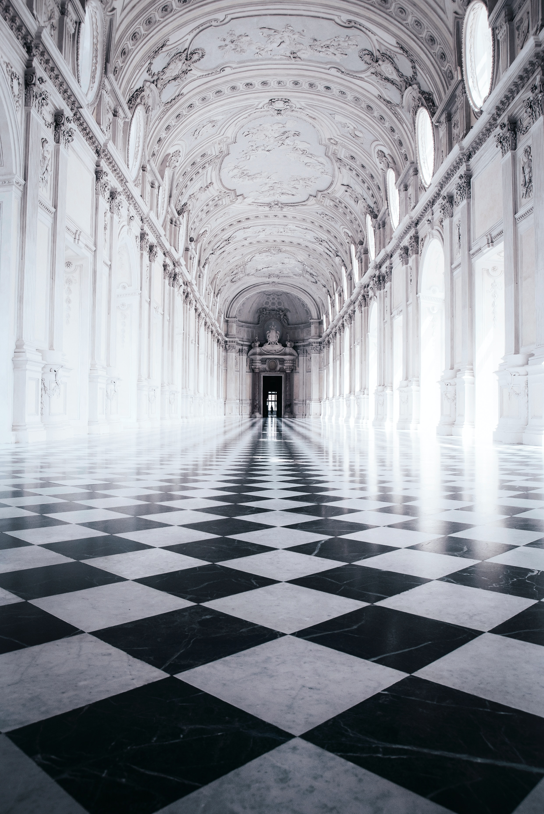

Chess
Chess is typically a game for 2 players.
Both sides are called white and black, and the aim of the game is to put your opponent in checkmate.
Chess overall is a strategy game with no hidden information, all of it is presented.
It is played on a 64 grid with 8x8 squares. At the start each player controls 16 pieces and can only move one per turn.
Different pieces have diverse ways of moving.
The pawns: during their starting move they can choose whether to move 1 or 2 spaces forward toward the enemy army.
They can take or attack people diagonally adjacent toward them forwardly.
They can take pieces that are diagonal towards them.
After this they can only move 1 square forward. If the pawn reaches the end of the board,
they can change into any piece except the king.

The bishops: they move in a diagonal pattern all around the board.
If they move to a square that is occupied by another piece they take it.
The knight: They move in an L shape. 1 left/right and 2 up/down. Any piece where the knight lands the knight takes it.
The knight has a unique gimmick to jump over pieces.
The rook moves vertically and horizontally all across the board. If it moves to a square that is occupied by another piece they take it.
The queen is like the rook and bishop combined. It is the most powerful piece on the chess board. It moves both diagonally, vertically and horizontally.
The king. The king can move 1 square in any direction. If the king is taken the game ends and that person is “checkmated”